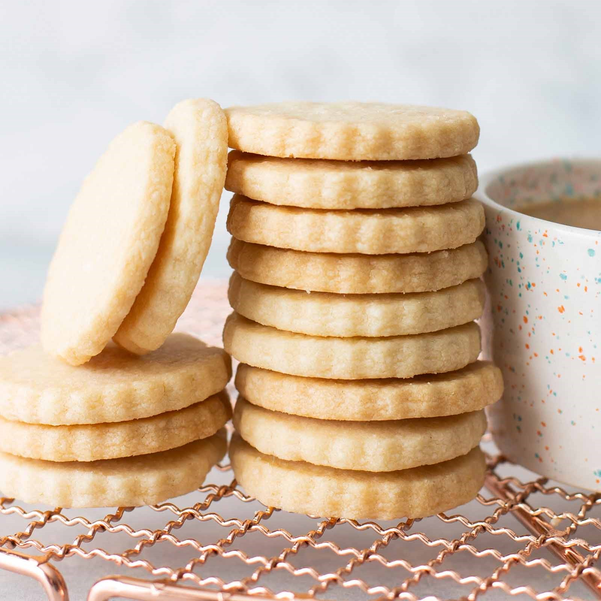
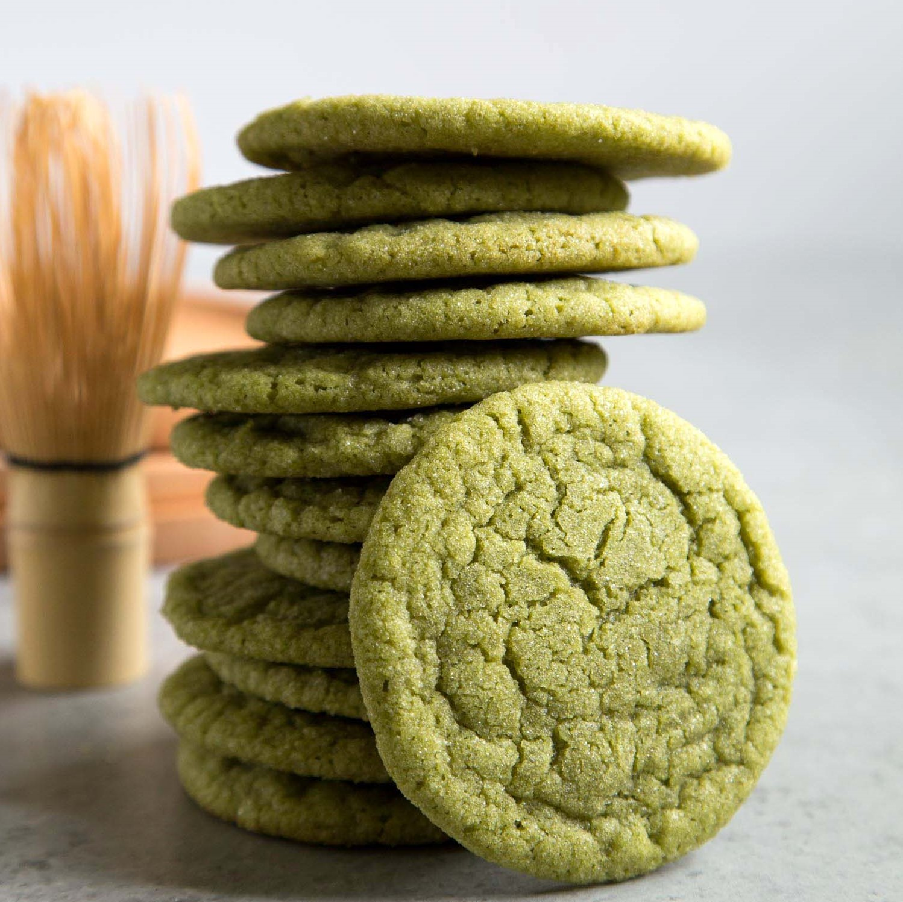

Research
After scouring the internet for a chocolate chip cookie recipe that would fulfill all my dreams, I decided to come up with my own. We all know the three secrets to french cooking are: butter, butter, and butter. So, I started with the butter. I tried melted, cold, room temp, country style, cultured, until finally I landed on the glorious browned butter. It adds nuttiness sans nuts and a whole lot of depth. After that was decided, I played around with different sugars and concluded mixing both brown and white provided the best flavour and texture. Finally, the chocolate. Semi-sweet chocolate chunks are a must. Whether you chop it from a block yourself or buy chunks, as long as you don't use those wax-laced chocolate chips, these cookies will take you to Triple C (Chocolate Chip Cookie) Heaven.After scouring the internet for a chocolate chip cookie recipe that would fulfill all my dreams, I decided to come up with my own. We all know the three secrets to french cooking are: butter, butter, and butter. So, I started with the butter. I tried melted, cold, room temp, country style, cultured, until finally I landed on the glorious browned butter. It adds nuttiness sans nuts and a whole lot of depth. After that was decided, I played around with different sugars and concluded mixing both brown and white provided the best flavour and texture. Finally, the chocolate. Semi-sweet chocolate chunks are a must. Whether you chop it from a block yourself or buy chunks, as long as you don't use those wax-laced chocolate chips, these cookies will take you to Triple C (Chocolate Chip Cookie) HeavenAfter scouring the internet for a chocolate chip cookie recipe that would fulfill all my dreams, I decided to come up with my own. We all know the three secrets to french cooking are: butter, butter, and butter. So, I started with the butter. I tried melted, cold, room temp, country style, cultured, until finally I landed on the glorious browned butter. It adds nuttiness sans nuts and a whole lot of depth. After that was decided, I played around with different sugars and concluded mixing both brown and white provided the best flavour and texture. Finally, the chocolate. Semi-sweet chocolate chunks are a must. Whether you chop it from a block yourself or buy chunks, as long as you don't use those wax-laced chocolate chips, these cookies will take you to Triple C (Chocolate Chip Cookie) Heaven
Similar Recipes


Recipe
Yields 16
Time: 30 mins
4.8/5
Ingredients
- 200g all-purpose flour
- 4g Diamond Crystal salt
- 4g baking soda
- 1.5 sticks (170g) unsalted butter
- 200g dark brown sugar
- 50g granulated sugar
- 2 large egg yolks
- 2 tsp. vanilla extract
- 170g bittersweet chocolate chunks
Prep
Place racks in upper and lower thirds of oven; preheat to 375°.
Dry Ingredients
Whisk flour, salt, and baking soda in a small bowl; set aside.
Browning the Butter
Cook ½ cup (1 stick; 113 g) butter in a large saucepan over medium heat, swirling often and scraping bottom of pan with a heatproof rubber spatula, until butter foams, then browns, about 4 minutes. Transfer butter to a large heatproof bowl and let cool 1 minute. Cut remaining ¼ cup (½ stick; 56 g) butter into small pieces and add to brown butter (it should start to melt but not foam and sizzle, so test with one piece before adding the rest).
Mixing
Once butter is melted, add both sugars and whisk, breaking up any clumps, until sugar is incorporated and no lumps remain. Add egg and egg yolks and whisk until sugar dissolves and mixture is smooth, about 30 seconds. Whisk in vanilla. Using rubber spatula, fold reserved dry ingredients into butter mixture just until no dry spots remain, then fold in chocolate (the dough will be soft but should hold its shape once scooped; if it slumps or oozes after being scooped, stir dough back together several times and let rest 5–10 minutes until scoops hold their shape as the flour hydrates).
Scoop & Bake
Using a 1½-oz. scoop (3 Tbsp.), portion out 16 balls of dough and divide between 2 parchment-lined rimmed baking sheets. Bake cookies, rotating sheets if cookies are browning very unevenly (otherwise, just leave them alone), until deep golden brown and firm around the edges, 8–10 minutes. Let cool on baking sheets.
Tips
Cookies can be made 3 days ahead. Store airtight at room temperature. OR prepare dough and freeze portions and keep in freezer for up to 3 months (if you can resist). Bake from frozen using directions above.